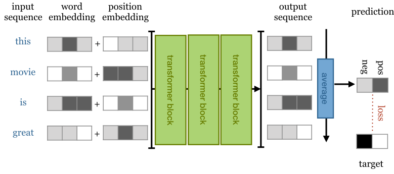

Transformer
Architecture overview
Bartosz WójtowiczPrerequisites
- You know how Neural Networks work
- Basic knowledge of PyTorch
- (optional) Basic understanding of attention mechanism
Vanilla Transformer - Quick Look
- Encoder - maps input sequence into a latent representation (memory) of the whole sequence.
- Decoder - generates output based on memory and words already generated.
Simpler Transformers
Modern Architectures (e.g. BERT, GPT2) are encoder-only architectures, thus they became much more simpler.
In this presentation we will mostly focus on those architectures.
Presentation outline
- Self-Attention
- Multi-Head Scaled Dot-Product Attention
- Positional Embeddings/Encodings
- Encoder Block
- Architecture examples
Self-Attention - basic example
We are transforming input vectors $x_1, x_2,..., x_t$ into corrseponding output vectors $y_1, y_2,..., y_t$.
E.g. $y_i$ can be weighed avereage over all input vectors.

$y_i = \sum_{j} w_{ij}x_j$
$w'_{ij} = x_{i}^{T}x_j$
$w_{ij} = \text{softmax}(w'_{ij})$
Self-Attention - key, value, query
From each input vector $x_i$ we derive three new vectors called $key, value$ and $query$.
$v_i = W_vx_i$
$q_i = W_qx_i$
$y_i = \sum_{j} w_{ij}x_j$
$w'_{ij} = q_{i}^{T}k_j$
$w_{ij} = \text{softmax}(w'_{ij})$
Self-Attention - Scaling dot product
The next trick is to scale our dot product by $\frac{1}{\sqrt{d_k}}$, where $d_k$ is the length of our embedding vector.
$y_i = \sum_{j} w_{ij}x_j$
$w'_{ij} = \frac{q_{i}^{T}k_j}{\sqrt{d_k}}$
$w_{ij} = \text{softmax}(w'_{ij})$
Scaled Dot-Product Attention
$\text{Attention}(Q, K, V) = \text{softmax}(\frac{QK^T}{\sqrt{d_k}})V$
Keys, values and queries are packed into matrices $K, V, Q$, which enables the attention function to be computed simultaneously over set of queries.

Scaled Dot-Product Attention
$\text{Attention}(Q, K, V) = \text{softmax}(\frac{QK^T}{\sqrt{d_k}})V$
class SelfAttention(nn.Module):
def __init__(self, emb_dim):
super().__init__()
self.emb_dim = emb_dim
self.tokeys = nn.Linear(emb_dim, emb_dim, bias=False)
self.toqueries = nn.Linear(emb_dim, emb_dim, bias=False)
self.tovalues = nn.Linear(emb_dim, emb_dim, bias=False)
def forward(self, x):
b, t, dk = x.size()
queries = self.toqueries(x)
keys = self.tokeys(x)
values = self.tovalues(x)
dot = torch.einsum("bqe, bke -> bqk", [queries, keys])
softmaxed = torch.softmax(dot / (dk ** (1/2)), dim = 2)
out = torch.einsum("bqk, bke -> bqe", [softmaxed, values])
return out
Multi-Head Attention
We just stack several "Scaled Dot-Product Attention" :)
Each attention mechanism (indexed by $h$) with different $W_{k}^{h}$, $W_{v}^{h}$, $W^s_{h}$ matrices.
For input $x_i$, we produce different output vector $y_i^s$ for each head.
We concatenate vectors $y_i^s$ and transform them linearly back to expected dimension.
Multi-Head Attention
$$\text{MultiHead}(X) = \text{Concat}(\text{head}_1, \text{head}_2,..., \text{head}_h)W_o$$ $$\text{head}_i = Attention(Q^i, K^i, V^i) $$
$ Q^i = XW_q^i $
$ K^i = XW_k^i $
$ V^i = XW_v^i $

Multi-Head Attention
class MultiHeadSelfAttention(nn.Module):
def __init__(self, emb_dim, heads = 8):
super().__init__()
self.emb_dim = emb_dim
self.heads = heads
# we combine all heads into single linear transformation
self.tokeys = nn.Linear(emb_dim, emb_dim * 8, bias=False)
self.toqueries = nn.Linear(emb_dim, emb_dim * 8, bias=False)
self.tovalues = nn.Linear(emb_dim, emb_dim * 8 , bias=False)
self.unifyheads = nn.Linear(emb_dim * 8, emb_dim)
def forward(self, x):
b, t, dk = x.size()
h = self.heads
queries = self.toqueries(x).view(b, t, h, dk)
keys = self.tokeys(x).view(b, t, h, dk)
values = self.tovalues(x).view(b, t, h, dk)
dot = torch.einsum("bqhe,bkhe -> bhqk", [queries, keys])
softmaxed = torch.softmax(dot / (dk ** (1/2)), dim = 3)
out = torch.einsum("bhqk, bkhe -> bqhe", [softmaxed, values])
return self.unifyheads(out)
Position information
Each layer in our model is permutation invariant (no recurrence, no convolution). If we change the order of words in a sentence, we get the exact same output.
We want out model to make use of the order of the sequence.
Positional Embedding
Just as we create (learnable) embeddings $v_{\text{cat}}, v_{\text{dog}}$ for words, we also create embeddings $v_{1},...,v_{m}$ for each position in a sentence.
+ easy to implement, works well
- need sequences of every length during training
Positional Encoding
We use function $f: N \to \mathbb{R}^K$ (usually a combination of $sin$ and $cos$ functions) to create positional embedding for different positions.
+ works just as well as embeddings
+ deals with sequences longer than in training
- a little harder to implement
- choice of encoding functions can be hard
Encoder Block
- Multi-Head Self-Attention
- Feed Forward layer - single FC NN applied independently to each vector
- Residual connections (added before normalization)
- Layer normalization layers
Let's see it in code!
Encoder code
class Encoder(nn.Module):
def __init__(self, emb, heads, hidden_multiplier = 4):
super().__init__()
self.attention = MultiHeadSelfAttention(emb, heads=heads)
self.norm1 = nn.LayerNorm(emb)
self.norm2 = nn.LayerNorm(emb)
self.ff = nn.Sequential(
nn.Linear(emb, hidden_multiplier * emb),
nn.ReLU(),
nn.Linear(hidden_multiplier * emb, emb)
)
def forward(self, x):
attended = self.attention(x)
x = self.norm1(attended + x)
forwarded = self.ff(x)
return self.norm2(forwarded + x)
Encoder-Only architecture examples
Simple sequence classification transformer
Simple sequence classification transformer
class ClassificationTransformer(nn.Module):
def __init__(self, emb, heads, depth, max_seq_length, num_tokens, num_classes):
super().__init__()
self.num_tokens = num_tokens
self.token_emb = nn.Embedding(num_tokens, emb)
self.pos_emb = nn.Embedding(max_seq_length, emb)
# stacked transformer blocks
blocks = [Encoder(emb = emb, heads = heads) for _ in range(depth)]
self.blocks = nn.Sequential(*blocks)
# classification on top of transformer blocks
# (averaged transformer output sequence as input)
self.toprobs = nn.Linear(emb, num_classes)
def forward(self, x):
b, seq_length = x.shape
# using positional embedding
# easier to implement than positional encoding
positions = self.pos_emb(torch.arange(0, max_seq_length, device = 'cuda').expand(b, max_seq_length))
tokens = self.token_emb(x)
# entire forward pass with mean
# averaging the last output sequence
x = tokens + positions
x = self.blocks(x)
x = x.mean(dim=1)
x = self.toprobs(x)
return F.log_softmax(x, dim = 1)
BERT
BERT (largest) = stack of 24 encoder blocks with embedding dimension of 1024 and 16 attention heads.
It is pretrained on 800M words from English books and 2.5B words from wikipedia.
Pretraining is done with 2 tasks:
- Masking
- Next sentence classification
Masking
We replace randomly 15% of words in the input sequence. The model is then asked to predict the masked words.
Masking procedure:
-
[MASK] token - 80% of time:
my dog is hairy -> my dog is [MASK] -
Random token - 10% of time:
my dog is hairy -> mydog is apple - Unchanged token - 10% of time: my dog is hairy -> mydog is apple
Next sequence classification
We sample 2 sequences from our corpus that either:
- Follow each other directly
- Are taken from random places
The model is then asked whick of those is the case.
The end!
References
- https://lilianweng.github.io/lil-log/2018/06/24/attention-attention.html
- https://www.youtube.com/watch?v=iDulhoQ2pro
- http://jalammar.github.io/illustrated-transformer/
- https://lionbridge.ai/articles/what-are-transformer-models-in-machine-learning/
- http://peterbloem.nl/blog/transformers
- https://arxiv.org/abs/1810.04805
- https://arxiv.org/abs/1706.03762
- https://github.com/BartWojtowicz/transformer-from-scratch